Tentando sintonizar um PID usando diferentes métodos.
Observando como a planta reage para uma entrada degrau unitário:
>> G=tf(20,poly([-1 -2])) % sismples sistema de 2a-ordem
G =
20
-------------
s^2 + 3 s + 2
Continuous-time transfer function.
>> % Verificando:
>> zpk(G)
20
-----------
(s+2) (s+1)
Continuous-time zero/pole/gain model.
>> % Verificando valor final da planta para entrada degrau, regime permanente:
>> dcgain(G)
ans =
10
>> % Planta vai atingir o valor 10 em regime permanente: $y(\infty)=10$.
>> % Observando como esta planta reage para entrada degrau unitário (em MA)
>> step(G)
%
Gráfico da resposta ao degrau (em MA):
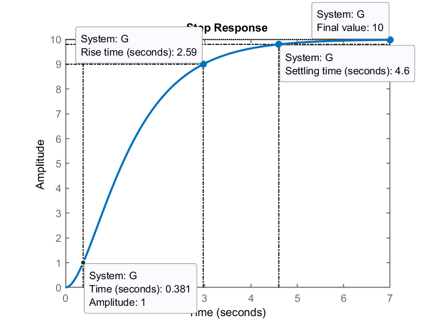
Usando o método 1 temos que obter os parâmetros
Na janela do gráfico, na barra de menu, selecionar: Tools >> Basic Fitting:
% 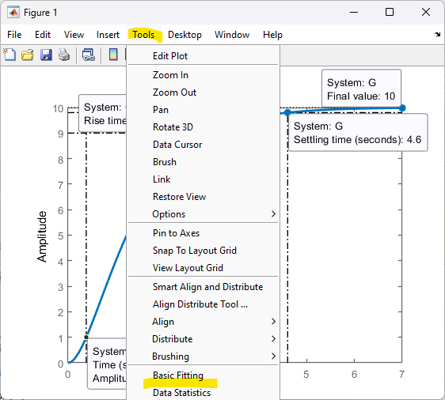
Deve-se abrir a janela deste app, onde algums ajustes devem ser feitos, entre eles:
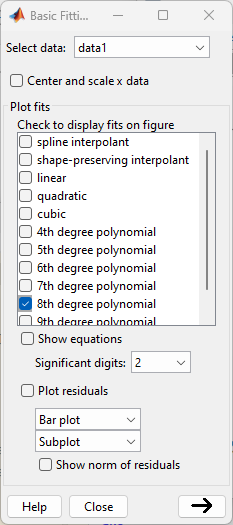
Clicar então no botão inferior -->. A janela anterior aumenta para:
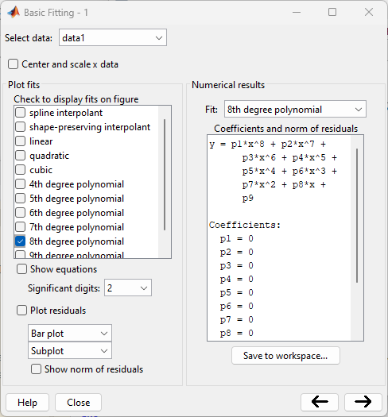
Você vai clicar agora em Save to workspace e deve surgir outra janela:
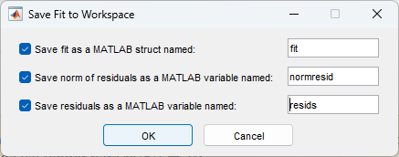
Clicar agora em Ok. Esta última janela se fecha e na janela de comandos do Matlab deve surgir a mensagem:
Variables have been created in the base workspace.
Supõe-se então que dados foram salvos no workspace. No caso, as variáveis fit, normresid e resids. Nos interessa apenas a variável fit. Explorando esta variável:
>> fit
fit =
type: 'polynomial degree 8'
coeff: [0 0 0 0 0 0 0 0 0]
>> % Tentando extrair o polinômio criado no "fitting":
>> p=fit.coeff % extraindo apenas o polinômio da curva levantada
p =
0 0 0 0 0 0 0 0 0
Notamos o polinômio vazio.
Deveríamos ter percebdo que o Matlab no momento em que tentamos aproximar a curva de um polinômio de 8a-ordem nos advertiu de que mais de uma solução havia sido encontrada, que o grau do polinômio era maior ou igual ao número de amostras usadas para levantá-lo:
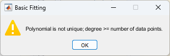
Se faz necessário “forçar” o Matlab a criar o mesmo gráfico da resposta ao degrau da planta, mas usando mais pontos. Uma solução é especificar a variável step():
>> t=0:0.01:5; % cria vetor t entre 0 à 5 segundos com incremento de 0,01 segundos
>> [y, t]=step(G,t); % gera vetor y com resposta ao degrau
O comando anterior, da forma que foi usado, não gera gráfico na tela. Então:
>> figure; plot(t,y)
>> grid;
Temos então um novo gráfico e a ferramenta “Basic fitting” deve ser ativada novamente:
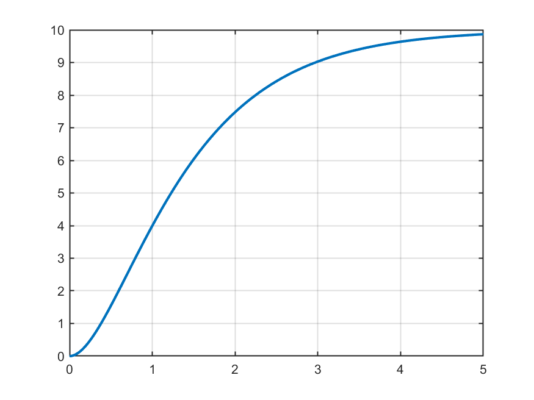
Ativando “Basic fitting” e agora reparamos que agora temos como prosseguir:
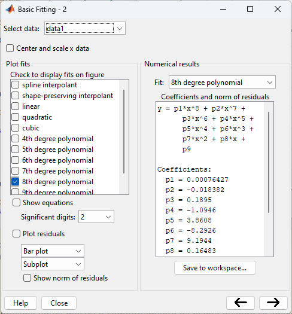
Note que na janela do gráfico surgiram 2 curvas: “data1” (dados originais; curva em azul) e “8th degree” (curva levantada, na cor amarela que mau se destaca):
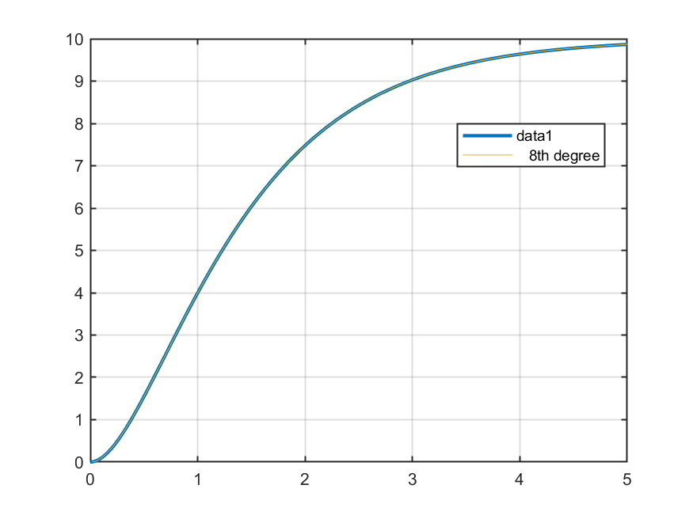
Agora podemos salvar os dados da curva aproximada de 8a-ordem, clicando em “Save to workspace”. Na janela de comandos do Matlab deve aparecer:
Variables have been created in the base workspace.
Nesta caso, os dados foram regravados (sobrescreveram) as mesmas variáveis anteriores, entre elas,fit.
Analisando a variável fit temos agora:
>> fit
fit =
type: 'polynomial degree 8'
coeff: [1×9 double]
>> p = fit.coeff % extraindo os coeficientes do polinômio
p =
Columns 1 through 5
0.00076427 -0.018382 0.1895 -1.0946 3.8608
Columns 6 through 9
-8.2926 9.1944 0.16483 -0.008144
>> % Descobrindo pontos min/máx de inflexão da curva, realizando deriavada primeira:
>> d_p = polyder(p)
d_p =
Columns 1 through 5
0.0061142 -0.12867 1.137 -5.473 15.443
Columns 6 through 8
-24.878 18.389 0.16483
>> % Realizando a derivada 2a para descobrir valores máximos e mínimos
>> dd_p = polyder(d_p)
dd_p =
Columns 1 through 5
0.042799 -0.77203 5.685 -21.892 46.329
Columns 6 through 7
-49.755 18.389
>> % Calculando-se as raízes de dd_p para descobrir os pontos de inflexão
>> % da curva aproximada (polinônimo de 8a-orde)
>> roots(dd_p)
ans =
4.7795 + 0i
4.0438 + 0.74241i
4.0438 - 0.74241i
2.236 + 1.6142i
2.236 - 1.6142i
0.69928 + 0i
>> % Pelo gráfico anterior, nota-se que o ponto de inflexão ocorre em:
x = ans(6) % 6o-valor da resposta anterior, isolado na variável x
x =
0.69928
>> % Este seria o ponto de partida da reta que queremos sobrepor
>> % à curva de resposta da planta
Levantando os dados que faltam para determinar a reta tangente à curva de resposta da planta e que passe pelo ponto de inflexão, lembramos da equaçao da reta:
O valor de d_p) no ponto de inflexão (ponto
>> a = polyval(d_p, x) % usa eq. dp/dt para calcular y' no ponto x
a =
5.0064
>> % Descobrindo o valor de y(t) qunado t=x
>> y_aux = polyval(p,x)
y_aux =
2.5284
>> % Lembrando da eq. da reta, temos como determinar 'b'
>> b = y_aux - a*x
b =
-0.97246
>> % Eq. (polinomio) da reta tangente:
>> reta=[a b];
>> % Verificando...
>> % Criando-se gráfico da reta que se sobrepõe à curva anterior:
>> y_reta = a.*t + b;
>> figure;
>> plot(t,y,'k-', t,y_reta,'b--')
>> grid
>> legend('curva original', 'reta tangente')
>> axis([0 5 -3 12]) % realizando um "zoom" na área de interesse
Deve ter sido gerado um gráfico semelhante à:
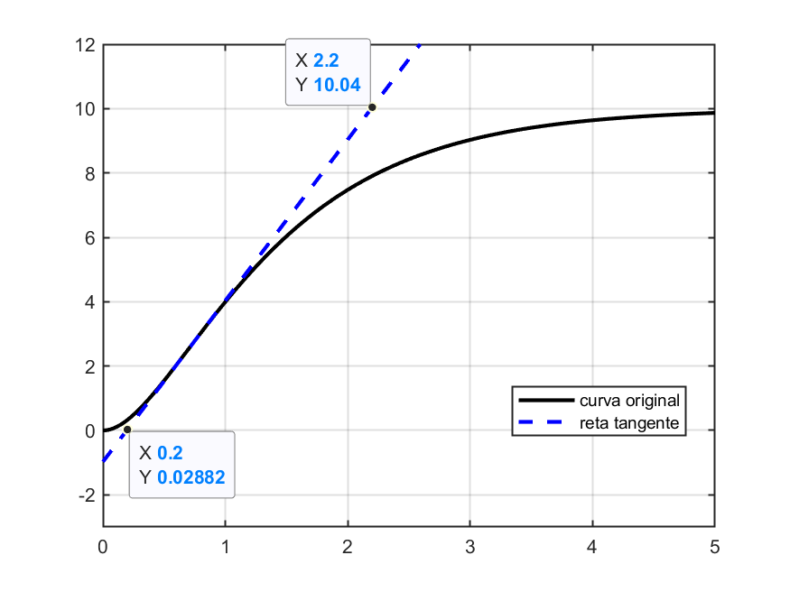
Extraindo-se agora, desta última figura, os parâmetros
No Matlab:
>> axis([0 5 -3 12]) % realizando um "zoom" na área de interesse
>> L=-b/a
L =
0.19424
E o parâmetro
No Matlab:
>> t1 = (10-b)/a
t1 =
2.1917
>> % e então:
>> T=t1-L
T =
1.9975
Aplicando-se os parâmetros
No Matlab:
>> s=tf('s');
>> C_PI1=0.6*T*(s+1/L)^2/s
C_PI1 =
1.198 s^2 + 12.34 s + 31.76
---------------------------
s
Continuous-time transfer function.
>> zpk(C_PI1)
ans =
1.1985 (s+5.148)^2
------------------
s
Continuous-time zero/pole/gain model.
Fechando a malha com este controlador:
>> ftma_PI1=C_PI1*G;
>> % verificando:
>> zpk(ftma_PI1)
23.97 (s+5.148)^2
-----------------
s (s+2) (s+1)
Continuous-time zero/pole/gain model.
>> % fechando a malha
>> ftmf_PI1=feedback(ftma_PI1,1);
>> % Verificando onde ficaram os pólos de MF deste sistema:
>> pole(ftmf_PI1)
ans =
-11.437 + 4.9308i
-11.437 - 4.9308i
-4.0954 + 0i
>> % Verificando os zeros deste sistema (destino dos polos)
>> zero(ftmf_PI1)
ans =
-5.1482
-5.1482
>> figure; step(ftmf_PI1)
>> stepinfo(ftmf_PI1)
RiseTime: 0.057703
SettlingTime: 0.37717
SettlingMin: 0.91776
SettlingMax: 1.1569
Overshoot: 15.687
Undershoot: 0
Peak: 1.1569
PeakTime: 0.15703
A resposta ao degrua unitário usando-se este controlador, fica:
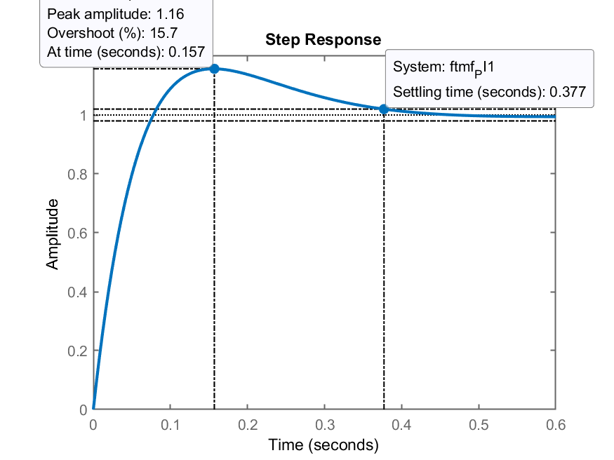
Salvando os dados para uso posterior
>> save dados